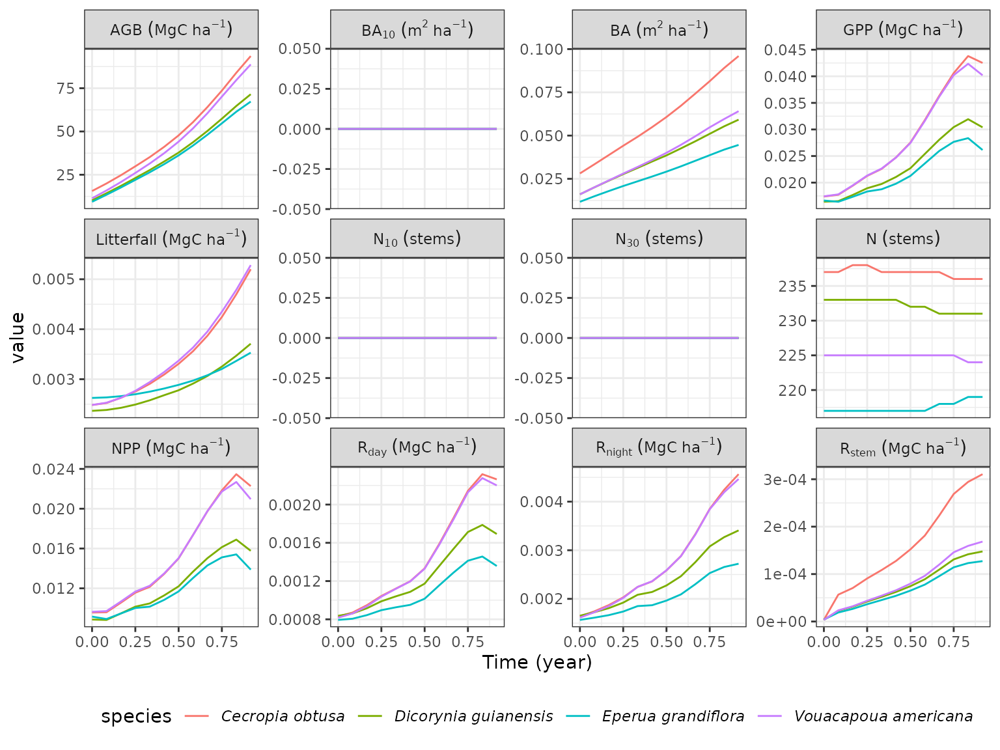
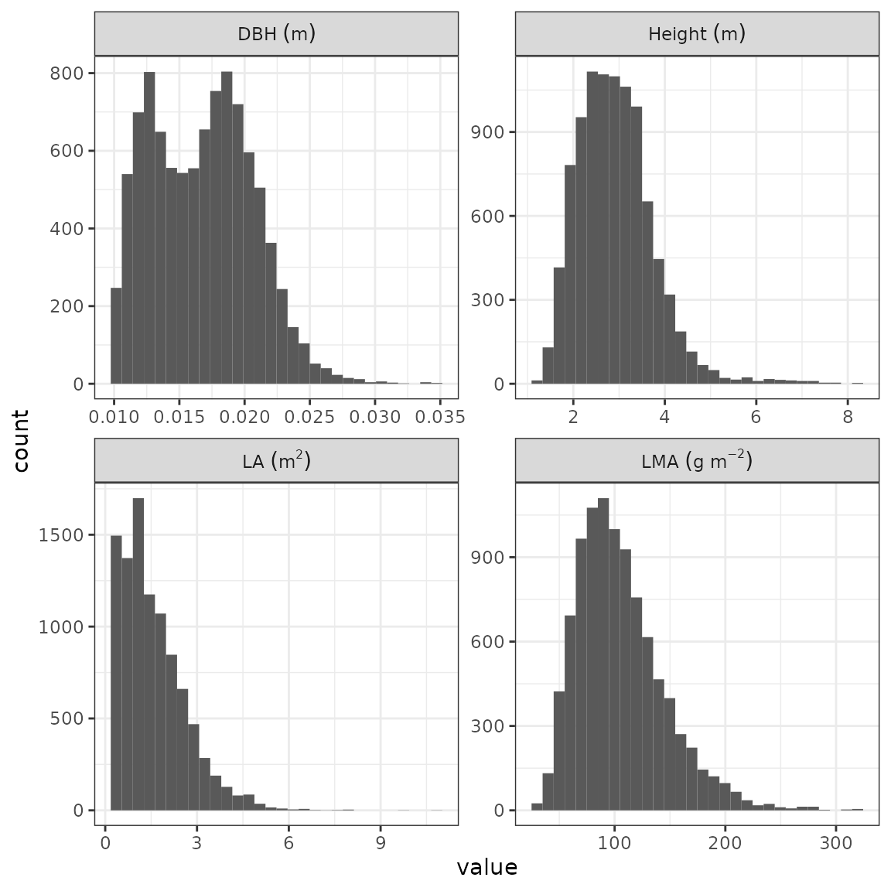
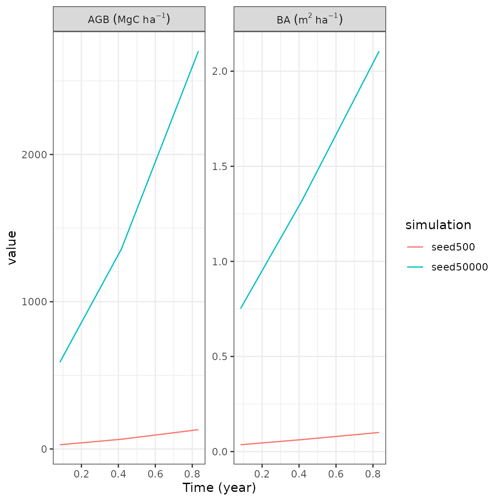
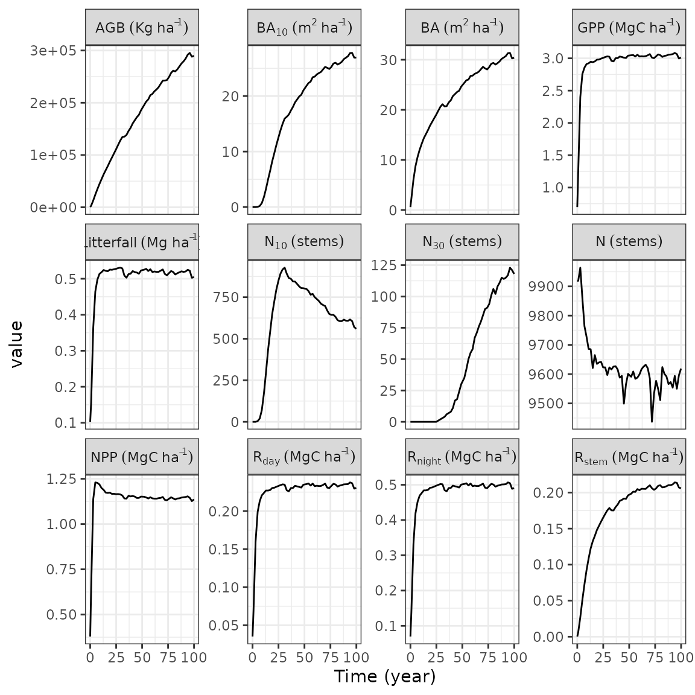
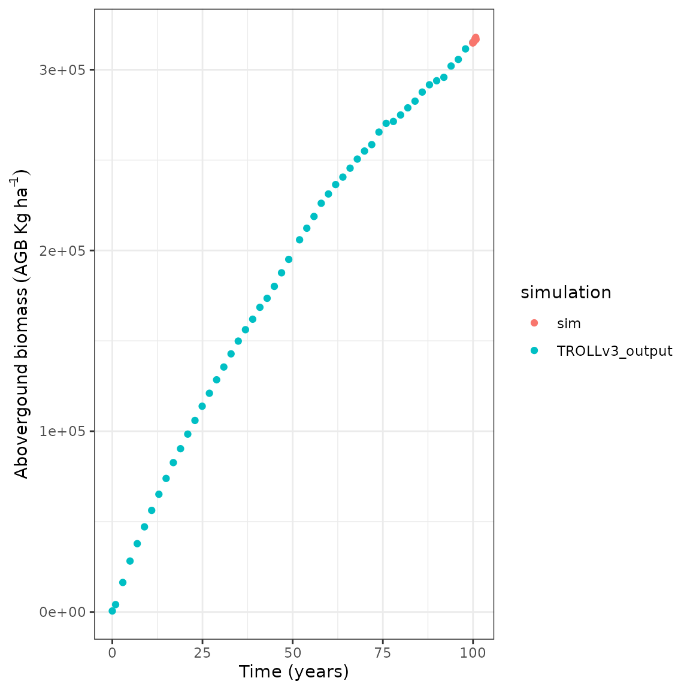

This vignette gives a quick example of a simple workflow to produce a single simulation, a stack of simulations, or start from an existing inventory or a previous simulation.
We will use rcontroll with packages dplyr
and tidyr for data wrangling and ggplot2 to do
figures.
We load the species data available for French Guiana
(TROLLv3_species), with associated climate data
(TROLLv3_climatedaytime12) and day variation
(TROLLv3_daytimevar). We also load a previous simulation
(TROLLv3_output). We generate parameters using
generate_parameters for a simulation per month
(iterperyear = 12) lasting one year (nbiter =
12) on a 100x100 grid (cols = 100 and rows =
100). We further duplicated parameters with a simulation index using
mutate and unnest for a stack of simulations
using a seedrain of 5000 (default) and 500
(default/10).
data("TROLLv3_species")
data("TROLLv3_climatedaytime12")
data("TROLLv3_daytimevar")
data("TROLLv3_output")
stack_parameters <- generate_parameters(
cols = 100, rows = 100,
iterperyear = 12, nbiter = 12 * 1
) %>%
mutate(simulation = list(c("seed50000", "seed500"))) %>%
unnest(simulation)
stack_parameters[62, 2] <- 500 # CseedrainWe can generate parameters and view them directly as a table with a
description of its effect using generate_parameters and
kable.
generate_parameters(cols = 250, rows = 250, nbiter = 12 * 1) %>%
head() %>%
knitr::kable()| param | value | description |
|---|---|---|
| cols | 250 | /* nb of columns */ |
| rows | 250 | /* nb of rows */ |
| HEIGHT | 70 | /* vertical extent of simulation */ |
| length_dcell | 25 | /* linear size of a dcell */ |
| nbiter | 12 | /* total nb of timesteps */ |
| iterperyear | 12 | /* number of iteration per year */ |
We run a simple simulation using the troll function with
loaded and generated data. Set verbose to TRUE
to see the TROLL log directly in the console.
sim <- troll(
name = "test",
global = generate_parameters(
cols = 100, rows = 100,
iterperyear = 12, nbiter = 12 * 1
),
species = TROLLv3_species,
climate = TROLLv3_climatedaytime12,
daily = TROLLv3_daytimevar,
verbose = TRUE
)We can print a simple summary of the simulation.
sim
#> Object of class : trollsim
#> Name : test
#> Path :
#> Extended : TRUE
#> From data : FALSE
#> Lidar simulation : FALSE
#> Random : FALSE
#>
#> 2D discrete network: horizontal step = 1 m, one tree per 1 m^2
#> Number of sites : 100 x 100
#> Number of iterations : 12
#> Duration of timestep : 30.41667 days
#> Number of Species : 45We can quickly plot simulation outputs using the
autoplot method for three types of outputs defined with the
what parameter:
temporal trajectories of variables for the whole
ecosystem or user-defined species,spatial patterns of variables, including species
labels, at forest initial or final pattern,distribution of variables at forest initial or
final pattern for the whole ecosystem or user-defined species.For instance here we show species temporal trajectories for all available variables using 4 species: Cecropia obtusa, Dicorynia guianensis, Eperua grandiflora, and Vouacapoua americana:
rcontroll::autoplot(sim,
what = "temporal",
species = c(
"Cecropia_obtusa", "Dicorynia_guianensis",
"Eperua_grandiflora", "Vouacapoua_americana"
)
) +
theme(legend.position = "bottom")
Note that
autoplotresults in aggplot2object that you can modify with the+operator and otherggplot2commands such asthemeused here to change the legend position.
Similarly, we can quickly plot the forest final patterns using
autoplot and what defined on
spatial:
rcontroll::autoplot(sim, what = "spatial")Finally, we can quickly plot variables distribution at forest final
patterns using autoplot and what defined on
distribution:
rcontroll::autoplot(sim, what = "distribution",
variables = c("dbh", "height", "LA", "LMA"))
#> `stat_bin()` using `bins = 30`. Pick better value with `binwidth`.
We run a stack of simulations using the stack function
with loaded and generated data. We can inactivate verbose
to see only the loading bar. We can define the number of cores used for
parallelization. And we can define a thinning of outputs by giving the
number of iterations to be kept to reduce the output size.
sim_stack <- stack(
name = "teststack",
simulations = c("seed50000", "seed500"),
global = stack_parameters,
species = TROLLv3_species,
climate = TROLLv3_climatedaytime12,
daily = TROLLv3_daytimevar,
verbose = FALSE,
cores = 2,
thin = c(1, 5, 10)
)
#>
|
| | 0%
|
|======================================================================| 100%We can print a simple summary of the simulations.
sim_stack
#> Object of class : trollstack
#> Name : seed50000
#> Path : /tmp/RtmpsxiPde/rcontroll/teststack
#> Number of simulations : 2
#> Extended : TRUE
#> From data : FALSE
#> Lidar simulation : FALSE
#> Random : FALSE
#>
#> 2D discrete network: horizontal step = 1 m, one tree per 1 m^2
#> Number of sites : 100 x 100
#> Number of iterations : 12
#> Duration of timestep : 30.41667 days
#> Number of Species : 45We can quickly plot temporal trajectories for all simulations using
autoplot and what defined on
temporal, for instance here with basal area (ba) and
aboveground biomass (agb):

Similarly, we can quickly plot the forest final patterns using
autoplot and what defined on
spatial:
rcontroll::autoplot(sim_stack, what = "spatial")We can also run a simple simulation or a stack of simulations
starting from an existing inventory or a previous simulation using the
troll function with the forest parameter.
We can first have a look to the ecosystem temporal trajectories of
the TROLLv3_output simulation:
rcontroll::autoplot(TROLLv3_output, what = "temporal")
Similarly we can have a look to the the forest final pattern from
TROLLv3_output that we will use to initiate the next
simulation:
rcontroll::autoplot(TROLLv3_output, what = "spatial", variables = "age")To run the simulation we first extracted the forest from
TROLLv3_output, in which we removed unused columns (not
mandatory). Then we extracted the previous simulation parameters to run
the new one in similar conditions, we only changed the time length to 12
iterations. And we finally used the same troll function
adding the previous forest to initiate the simulation with the
forest parameter. A forest inventory can also be used with
at least coordinates and DBH.
sim <- troll(
name = "test",
global = update_parameters(TROLLv3_output, nbiter = 12 * 1),
species = TROLLv3_output@inputs$species,
climate = TROLLv3_output@inputs$climate,
daily = TROLLv3_output@inputs$daily,
forest = get_forest(TROLLv3_output),
verbose = FALSE
)We can quickly plot temporal trajectories of both simulations to
check that the initialization from TROLLv3_output worked.
For that we updated the simulation iteration index by adding the number
realised in the previous simulation. Then we simply joined ecosystem
outputs with bind_rows before using ggplot to
show aboveground biomass (agb) temporal trajectory:
sim@ecosystem$iter <- sim@ecosystem$iter + max(TROLLv3_output@ecosystem$iter)
list(
"TROLLv3_output" = TROLLv3_output@ecosystem,
"sim" = sim@ecosystem
) %>%
bind_rows(.id = "simulation") %>%
ggplot(aes(iter / 12, agb, col = simulation)) +
geom_point() +
theme_bw() +
xlab("Time (years)") +
ylab(expression(Abovergound ~ biomass ~ (AGB ~ Kg ~ ha^{
-1
})))
Note how the simulation AGB starts at the end of
TROLLv3_output’s temporal trajectory.
gifs <- autogif(
name = "dynamic",
variables = "height_ct",
global = update_parameters(TROLLv3_output,
nbiter = 12 * 100,
extent_visual = 100),
species = TROLLv3_output@inputs$species,
climate = TROLLv3_output@inputs$climate,
daily = TROLLv3_output@inputs$daily,
forest = get_forest(TROLLv3_output),
verbose = FALSE
)
gifs$height_ct